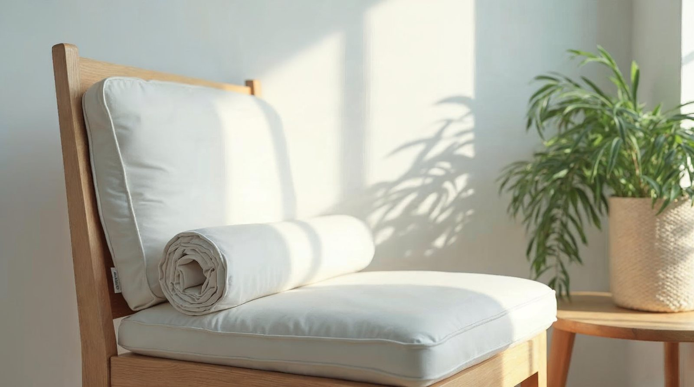
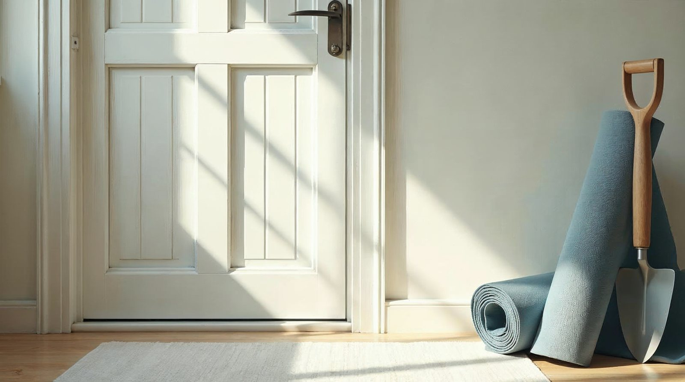
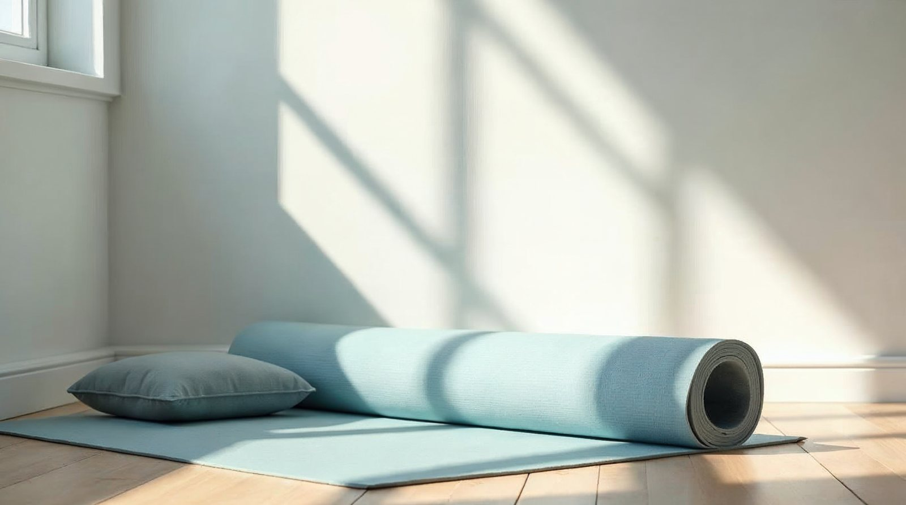
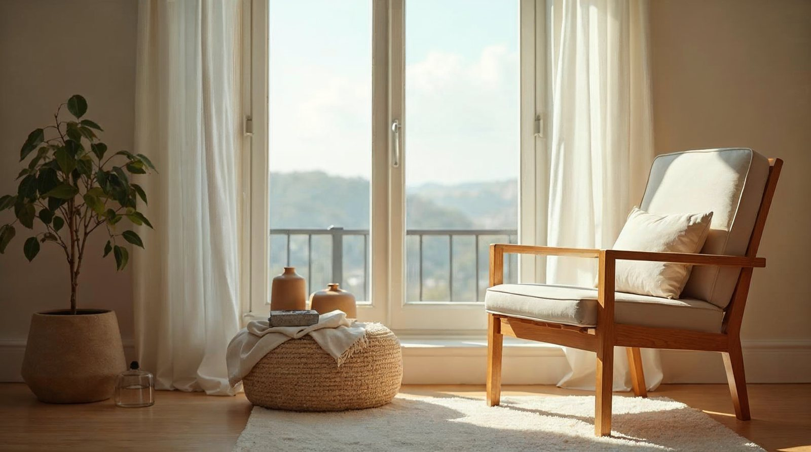
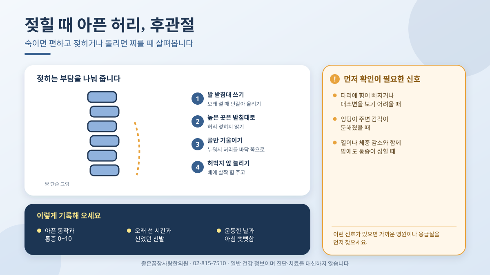

이종호 한의사 감수좋은꿈참사랑한의원 대표원장 (한의사 면허번호 19769)발행 2026-11-26 · 수정 2026-11-26
이 글의 차례
빨래를 널려고 팔을 높이 들고 허리를 살짝 젖히는 순간, 허리 한쪽 아래가 콕 하고 찌릅니다. 높은 선반 위 그릇을 꺼낼 때도, 운전석에서 몸을 돌려 뒷좌석 가방을 집을 때도 같은 자리가 아픕니다. 그런데 이상하게 허리를 앞으로 숙일 때는 오히려 편하다고 하십니다.
진료실에서 이런 이야기를 들으면 저는 척추 뒤쪽에 있는 작은 관절을 먼저 떠올립니다. 흔히 허리 통증이라고 하면 디스크부터 생각하시지만, 허리에는 디스크 말고도 움직임을 이끌고 버티는 관절이 따로 있습니다. 이 관절이 지치면 젖히고 돌리는 동작에서 통증이 두드러집니다.
이 통증은 오래 서 있거나 하이힐을 신은 날, 배가 앞으로 나온 자세로 하루를 보낸 날 더 심해지기도 합니다. 아침에 일어날 때 허리가 뻣뻣하다가 조금 움직이면 풀리고, 하루 종일 서서 일한 저녁에 다시 무거워지는 흐름을 보이는 분도 많습니다.
이 글에서는 후관절이 무엇인지, 왜 젖힐 때 아픈지, 디스크나 다른 허리 통증과 어떻게 다른지, 그리고 생활에서 해 볼 수 있는 것과 한의원에서 함께 살필 수 있는 것을 차례로 정리했습니다.

요추 후관절은 어디에 있고 무슨 일을 하나요
허리뼈는 앞쪽의 둥근 몸통과 뒤쪽의 고리 모양 부분으로 이루어져 있습니다. 앞쪽 몸통 사이에는 쿠션 역할을 하는 디스크가 있고, 뒤쪽 고리에는 위아래 뼈가 맞물리는 작은 관절이 한 마디마다 양쪽에 하나씩 있습니다. 이것이 후관절입니다.
후관절은 허리가 어느 방향으로 얼마나 움직일지를 이끌어 주는 길잡이 역할을 합니다. 특히 허리를 뒤로 젖히거나 비틀 때 이 관절면이 서로 가까워지며 체중을 나눠 받습니다. 다른 관절처럼 얇은 연골과 관절을 감싸는 막이 있어서, 무리가 쌓이면 붓고 뻣뻣해질 수 있습니다.
후관절 주변에는 감각 신경이 촘촘히 분포해 있습니다. 그래서 관절 주변이 지치면 허리 한쪽이 콕 찌르거나, 엉덩이와 허벅지 바깥쪽까지 묵직하게 퍼지는 느낌이 들기도 합니다. 다만 무릎 아래까지 저리게 내려가는 경우는 드문 편입니다.
왜 허리를 젖힐 때 더 아플까요
허리를 뒤로 젖히면 척추 뒤쪽 관절이 서로 맞닿으며 눌립니다. 관절이 건강할 때는 문제가 없지만, 이미 지쳐 있거나 주변 근육이 굳어 있으면 이 순간 통증이 생깁니다. 반대로 앞으로 숙이면 관절 사이가 벌어지면서 압력이 줄어 오히려 편하게 느껴집니다.
- 배가 앞으로 나오고 허리가 지나치게 휜 자세로 오래 서 있는 경우
- 높은 굽의 신발을 자주 신어 골반이 앞으로 기우는 경우
- 허벅지 앞쪽과 고관절 앞 근육이 짧아져 골반을 끌어당기는 경우
- 배와 엉덩이 근육이 약해 허리 뒤쪽 관절이 혼자 체중을 받는 경우
- 골프, 테니스처럼 허리를 반복해서 비트는 운동을 많이 하는 경우
- 나이가 들며 디스크 높이가 낮아져 뒤쪽 관절이 더 많은 짐을 지는 경우
마지막 경우처럼 디스크 변화와 후관절 통증은 함께 오기도 합니다. 앞쪽 쿠션이 얇아지면 뒤쪽 관절이 더 많은 체중을 받게 되고, 그만큼 쉽게 지칩니다. 그래서 연세가 있는 분들은 숙일 때와 젖힐 때 모두 불편하다고 하시는 경우도 있습니다.
디스크 통증과는 어떻게 다른가요
허리 디스크 문제는 보통 앞으로 숙이거나 오래 앉아 있을 때 불편이 커지고, 기침이나 재채기에 통증이 울리기도 합니다. 신경이 눌리면 엉덩이에서 다리 뒤쪽을 따라 발까지 저림이 내려가는 경우가 많습니다.
후관절 통증은 반대로 젖히거나 비틀 때, 오래 서 있을 때 불편이 커지는 경우가 많습니다. 아픈 자리를 손가락으로 짚을 수 있을 만큼 허리 한쪽에 또렷하게 머무르고, 퍼지더라도 엉덩이나 허벅지 정도에서 멈추는 편입니다.
걸으면 다리가 저려 자꾸 쉬어야 하는 척추관 협착증도 젖히는 자세에서 불편이 커질 수 있습니다. 협착은 다리 저림이 주된 불편이고, 허리를 숙이거나 쪼그려 앉으면 풀리는 모습이 특징입니다. 비슷해 보여도 다루는 방법이 조금씩 달라서 진찰에서 이 차이를 자세히 살핍니다.
스스로 살펴볼 수 있는 몇 가지
아래 동작을 천천히 해 보시면 내 허리가 어느 방향을 불편해하는지 감을 잡으실 수 있습니다. 통증이 크게 생기면 바로 멈추시고, 억지로 끝까지 하지 않으셔도 됩니다.
- 선 자리에서 두 손을 허리에 대고 천천히 뒤로 젖혀 보기
- 그 상태에서 몸을 오른쪽, 왼쪽으로 살짝 돌려 보기
- 앞으로 천천히 숙여 손끝이 어디까지 내려가는지 보기
- 의자에 30분 앉아 있을 때와 30분 서 있을 때를 비교해 보기
젖히고 돌릴 때 한쪽이 찌르고 숙일 때는 편하다면 후관절 쪽 가능성을 생각해 볼 수 있습니다. 물론 이것은 대략적인 경향이고, 실제로는 여러 구조가 함께 관여하는 경우가 많아 진료실에서 다시 확인합니다.

일과 운동에 따라 달라지는 모습
하루 종일 서서 일하는 분, 특히 계산대나 조리대처럼 한자리에 서서 몸을 반복해서 돌리는 일을 하시는 분은 저녁 무렵 허리 한쪽이 묵직해진다고 많이 말씀하십니다. 서 있는 동안 배에 힘이 빠지면서 허리가 점점 젖혀지고, 뒤쪽 관절이 오래 눌리기 때문입니다.
골프나 테니스, 배드민턴처럼 몸을 강하게 비트는 운동을 즐기는 분도 이 통증을 자주 겪습니다. 스윙 마지막에 허리를 크게 젖히며 마무리하는 동작이 반복되면 뒤쪽 관절에 부담이 쌓입니다. 운동량을 갑자기 늘린 시기에 시작되는 경우가 많습니다.
임신 후기나 출산 뒤에도 배가 앞으로 나오며 허리가 휘는 자세가 이어져 비슷한 불편이 생길 수 있습니다. 이 시기에는 몸의 변화가 크니 진료 전에 임신 여부와 출산 시기를 먼저 알려 주시면 그에 맞춰 살핍니다.

자꾸 되풀이되는 통증은 어떻게 볼까요
후관절 통증을 겪는 분들 가운데는 몇 주 편하다가 어느 날 또 같은 자리가 찌르는 일을 되풀이하는 분이 많습니다. 아픈 시기가 지나면 생활이 원래대로 돌아가고, 허리를 젖히는 습관과 약한 배와 엉덩이 근육도 그대로 남기 때문입니다.
그래서 저는 통증이 가라앉은 뒤가 더 중요하다고 말씀드립니다. 아플 때 쉬어 주는 것만큼, 편해진 뒤에 허리를 받쳐 주는 힘을 조금씩 기르는 일이 다음 통증까지의 간격을 넓혀 줍니다. 하루 10분, 누워서 하는 가벼운 운동부터 시작해도 충분합니다.
되풀이될 때마다 언제, 무엇을 한 뒤였는지를 적어 두시면 공통점이 보이는 경우가 많습니다. 이사나 대청소, 운동량을 늘린 주, 굽 높은 신발을 오래 신은 날처럼 계기가 비슷하다면 그 장면을 미리 대비할 수 있습니다.
먼저 이렇게 여쭙니다
처음 오시면 저는 대략 이런 순서로 여쭙니다. 미리 떠올려 오시면 이야기가 훨씬 수월해집니다.
- 언제부터, 어떤 계기로 아프기 시작했나요?
- 숙일 때와 젖힐 때, 돌릴 때 중 어느 쪽이 가장 불편한가요?
- 아픈 자리를 손가락 하나로 짚을 수 있나요? 한쪽인가요, 양쪽인가요?
- 오래 서 있을 때와 오래 앉아 있을 때 중 언제 더 힘드신가요?
- 하시는 일과 즐기는 운동, 자주 신는 신발은 어떤가요?
- 다리로 저림이 내려가는지, 내려간다면 어디까지인지요?
잠자는 자세도 함께 여쭙니다. 엎드려 주무시는 습관이 있으면 밤새 허리가 젖혀진 채로 있어서 아침에 뻣뻣함이 커질 수 있습니다. 이런 작은 습관이 통증의 흐름을 설명해 주는 경우가 많습니다.
일상에서 먼저 해 볼 수 있는 것
후관절 통증은 생활 속 자세와 습관을 조금만 바꿔도 허리가 한결 편해지는 경우가 많습니다. 젖히는 부담을 줄이고, 허리를 받쳐 주는 근육을 깨우는 쪽으로 방향을 잡으시면 됩니다.
- 오래 서 있을 때는 한쪽 발을 낮은 받침대에 번갈아 올려 두기
- 높은 곳의 물건은 허리를 젖히지 말고 받침대를 딛고 꺼내기
- 엎드려 자는 습관이 있다면 옆으로 누워 무릎 사이에 베개 끼우기
- 굽 높은 신발은 신는 날과 시간을 줄이기
- 누워서 무릎을 세우고 허리를 바닥 쪽으로 살짝 누르는 골반 기울이기
- 무릎을 가슴 쪽으로 천천히 당겨 허리 뒤쪽을 늘려 주기
허벅지 앞쪽과 고관절 앞이 짧아져 있으면 골반이 앞으로 끌려가 허리가 더 휩니다. 한쪽 무릎을 바닥에 대고 앞뒤로 다리를 벌린 자세에서 골반을 살짝 앞으로 밀어 허벅지 앞을 늘려 주는 스트레칭이 도움이 됩니다. 이때 허리를 젖히지 않도록 배에 살짝 힘을 주세요.
통증이 심한 첫 며칠은 찌르는 동작을 피하고 편한 자세로 쉬시되, 하루 종일 누워 있지는 마세요. 아픈 자리가 화끈하고 부은 느낌이면 짧게 차갑게, 뻣뻣하고 굳은 느낌이면 따뜻하게 해 주시는 쪽이 대체로 편합니다.
골프나 테니스를 즐기신다면 통증이 가라앉을 때까지는 스윙 연습량을 줄이고, 다시 시작할 때는 짧은 거리부터 천천히 늘려 보세요. 운동 전에는 허리보다 엉덩이와 가슴 쪽을 먼저 풀어 회전이 허리에만 몰리지 않게 하는 것이 좋습니다.
한의원에서 함께 살필 수 있는 경우
- 허리를 젖히거나 돌릴 때 허리 한쪽이 콕 찌르는 경우
- 오래 서 있으면 허리 아래가 묵직하고 숙이면 오히려 편한 경우
- 아침에 허리가 뻣뻣했다가 움직이면 조금 풀리는 경우
- 골프나 테니스처럼 비트는 운동 뒤 허리 한쪽이 자주 아픈 경우
- 허리와 함께 엉덩이, 허벅지 바깥쪽까지 묵직하게 당기는 경우
좋은꿈참사랑한의원에 오시면 먼저 아래 '먼저 확인이 필요한' 신호가 없는지부터 봅니다. 그다음 맥을 짚고, 허리를 여러 방향으로 움직여 보며 어느 마디, 어느 쪽에서 불편이 커지는지 확인합니다. 골반의 기울기와 허벅지 앞쪽의 당김도 함께 봅니다.
진찰한 내용을 바탕으로 침, 약침, 추나, 온열 관리 가운데 지금 상태에 맞는 것을 정합니다. 굳은 근육이 오래 이어지고 잠이나 몸의 냉함이 함께 있다면 한약 상담을 하기도 하며, 이때는 드시는 약을 모두 확인하고 신중히 정합니다. 임신 중이시거나 가능성이 있다면 먼저 알려 주시고, 산부인과와 상의하도록 안내합니다.
정형외과에서 주사나 물리치료를 받고 계셔도 함께하실 수 있습니다. 처방받은 약은 상의 없이 멈추지 마시고, 진료 일정이 겹치면 미리 말씀해 주시면 순서를 맞춰 드립니다.
이렇게 기록해 오시면 상담이 쉬워집니다
일주일 정도 아래 내용을 간단히 적어 오시면 어떤 동작과 생활이 허리를 불편하게 하는지가 훨씬 또렷해집니다.
- 아픈 동작(젖히기, 돌리기, 오래 서기)과 그때의 통증 정도 0~10
- 오래 서 있었던 시간과 신었던 신발
- 운동한 날과 운동 종류, 시간
- 아침에 일어났을 때의 뻣뻣함과 풀리기까지 걸린 시간
- 잠잔 자세와 밤에 깬 횟수
기록을 보다 보면 '굽 있는 신발을 신은 날 저녁에 심하다', '골프 연습 다음 날 아침이 힘들다'처럼 내 허리만의 패턴이 보입니다. 그 패턴을 알면 피할 것과 해 볼 것이 분명해집니다.
휴대폰으로 아픈 동작을 짧게 찍어 오시는 것도 좋습니다. 진료실에서는 긴장해서 평소처럼 움직이지 못하시는 경우가 많은데, 집에서 찍은 영상을 보면 어느 순간 허리가 젖혀지는지, 어떤 자세로 서 계시는지가 훨씬 잘 보입니다.

젖히는 허리를 받쳐 주는 힘
후관절 통증은 허리 뒤쪽이 혼자 너무 많은 일을 하고 있다는 신호인 경우가 많습니다. 배와 엉덩이가 조금 더 거들어 주고, 젖히는 습관이 줄어들면 허리의 짐도 그만큼 나뉩니다. 아픈 자리만 보기보다 허리를 둘러싼 몸 전체의 쓰임을 함께 돌아보는 것이 오래 편안하게 지내는 길입니다.
이번 주에는 오래 서 있을 때 발 받침대 하나를 두는 것부터 시작해 보세요. 작은 받침대 하나가 하루 동안 허리가 젖혀지는 시간을 꽤 줄여 줍니다. 다음에 오시면 기록을 함께 보며, 허리가 가장 편했던 날의 자세부터 이야기 나눠 보겠습니다.
이런 증상은 먼저 확인이 필요합니다
- 다리에 힘이 빠지거나 대소변을 보기 어렵고 엉덩이 주변 감각이 둔해진 경우
- 열이 나거나 이유 없이 체중이 줄면서 밤에 누워 있어도 허리 통증이 심해지는 경우
이런 신호가 있으면 한의원보다 가까운 병원이나 응급실을 먼저 찾으세요.
함께 읽으면 좋은 글
- 아침에 일어나면 허리가 뻣뻣한 것은 왜 그런가요?
- 허리가 앞으로 많이 휜 느낌일 때는 자세를 어떻게 점검하나요?
- 허리 아래 엉치 한쪽이 콕 찌르듯 아픈 천장관절 통증은 어떻게 살피나요?
- 골프 스윙을 한 뒤 허리가 비틀리듯 아픈 것은 어떻게 살피나요?
- 하루 종일 서서 일하면 저녁마다 허리가 묵직할 때 어떻게 살피나요?

여쭙는 것
- 언제부터, 어떤 계기로 아프기 시작했나요?
- 숙일 때와 젖힐 때, 돌릴 때 중 어느 쪽이 가장 불편한가요?
- 아픈 자리를 손가락 하나로 짚을 수 있나요? 한쪽인가요, 양쪽인가요?
생활에서 해 볼 것
- 오래 서 있을 때는 한쪽 발을 낮은 받침대에 번갈아 올려 두기
- 높은 곳의 물건은 허리를 젖히지 말고 받침대를 딛고 꺼내기
- 엎드려 자는 습관이 있다면 옆으로 누워 무릎 사이에 베개 끼우기
한의원에서 함께 살필 것
- 허리를 젖히거나 돌릴 때 허리 한쪽이 콕 찌르는 경우
- 오래 서 있으면 허리 아래가 묵직하고 숙이면 오히려 편한 경우
- 아침에 허리가 뻣뻣했다가 움직이면 조금 풀리는 경우
먼저 확인이 필요한 신호
- 다리에 힘이 빠지거나 대소변을 보기 어렵고 엉덩이 주변 감각이 둔해진 경우
- 열이 나거나 이유 없이 체중이 줄면서 밤에 누워 있어도 허리 통증이 심해지는 경우
한눈에 보는 표
| 구분 | 핵심 |
|---|---|
| 여쭙는 것 | 언제부터, 어떤 계기로 아프기 시작했나요? 숙일 때와 젖힐 때, 돌릴 때 중 어느 쪽이 가장 불편한가요? |
| 생활에서 해 볼 것 | 오래 서 있을 때는 한쪽 발을 낮은 받침대에 번갈아 올려 두기 높은 곳의 물건은 허리를 젖히지 말고 받침대를 딛고 꺼내기 |
| 한의원에서 함께 살필 것 | 허리를 젖히거나 돌릴 때 허리 한쪽이 콕 찌르는 경우 오래 서 있으면 허리 아래가 묵직하고 숙이면 오히려 편한 경우 |
| 먼저 확인이 필요한 신호 | 다리에 힘이 빠지거나 대소변을 보기 어렵고 엉덩이 주변 감각이 둔해진 경우 열이 나거나 이유 없이 체중이 줄면서 밤에 누워 있어도 허리 통증이 심해지는 경우 |
자주 묻는 질문
허리를 숙이면 편한데 젖히면 아파요. 디스크가 아닌가요?
숙일 때 편하고 젖히거나 돌릴 때 아프다면 척추 뒤쪽 관절이 관여하는 경우가 많습니다. 다만 여러 구조가 함께 관여하기도 해서 진찰로 움직임을 직접 확인해 봅니다.
후관절 통증은 영상 검사에서 보이나요?
관절의 변화가 보이기도 하지만, 사진에 보이는 정도와 통증이 꼭 같지는 않습니다. 그래서 검사 결과와 함께 어떤 동작에서 아픈지를 함께 살핍니다.
허리 근육을 키우려고 엎드려 상체를 드는 운동을 해도 되나요?
허리를 크게 젖히는 운동은 후관절에 부담이 될 수 있어 통증이 있을 때는 조심하시는 편이 좋습니다. 배와 엉덩이 근육을 깨우는 운동부터 시작해 보세요.
오래 서서 일해야 하는데 어떻게 하면 좋을까요?
낮은 받침대에 한쪽 발을 번갈아 올리고, 한 시간에 한 번은 무릎을 가슴 쪽으로 당기듯 허리를 살짝 숙여 풀어 주세요. 바닥이 딱딱하다면 쿠션 있는 신발이나 매트가 도움이 됩니다.
추나를 받으면 젖히는 통증이 심해지지 않을까요?
진찰을 통해 불편한 방향을 먼저 확인하고, 그 방향으로 무리가 가지 않는 범위에서 방법과 강도를 정합니다. 받는 동안 불편하시면 바로 말씀해 주세요.
좋은꿈참사랑한의원은 재진 때 지난번 이야기부터 이어서 여쭙니다. 진료시간과 예약은 오시는 길에서 확인하세요.
어디서 상담받을 수 있나요?
좋은꿈참사랑한의원은 서울 동작구 만양로2길 2 신성빌딩 3층·5층(서울 동작구 상도동, 7호선 상도역 3번 출구 근처)에 있습니다. 한의사 3명(이종호 대표원장, 조영기 수석진료원장, 정원영 진료원장)이 진료합니다. 진료시간은 평일 09:30~20:00(점심 13:00~14:00), 토·일·공휴일 09:30~15:00이며, 방문 전 전화로 확인을 권합니다. 예약은 네이버 예약, 카카오톡 상담, 전화 02-815-7510로 받습니다.
이 글은 일반적인 건강 정보이며 개인의 진단이나 치료를 대신하지 않습니다. 증상이 있거나 복용 중인 약이 있다면 진료를 통해 확인하세요. 치료 효과는 개인마다 다를 수 있습니다.
작성 기준: 일반적으로 알려져 있는 건강 정보를 참고해 정리했습니다(대표원장 감수). 증상 기록은 1~2주 동안 하루 1회, 비슷한 시간에 적어 오시면 지난 상태와 비교하기 쉽습니다.